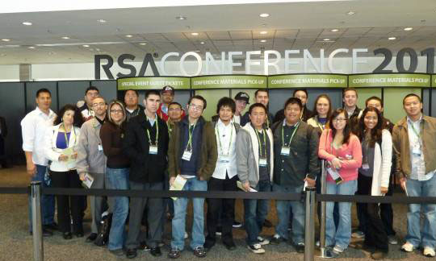

JQuery Slide Viewer
- 
Oracle Open World and RSA Conference
IS Students have two opportunities each year for exciting field trips to world-class conferences on database and security held at the Moscone Center in San Francisco - Oracle Open World, held in the Fall and the RSA Conference, held in the Spring.
This example uses a JQuery Slide Viewer to display 6 photo taken at Oracle Open World 2010, alternates every 3 seconds. The images, the size and number of the images, and the length of the interval time are all customizable.
Have fun with it!